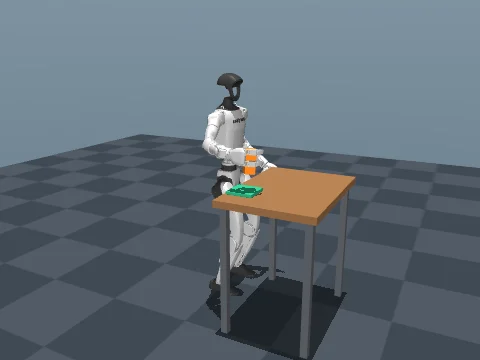
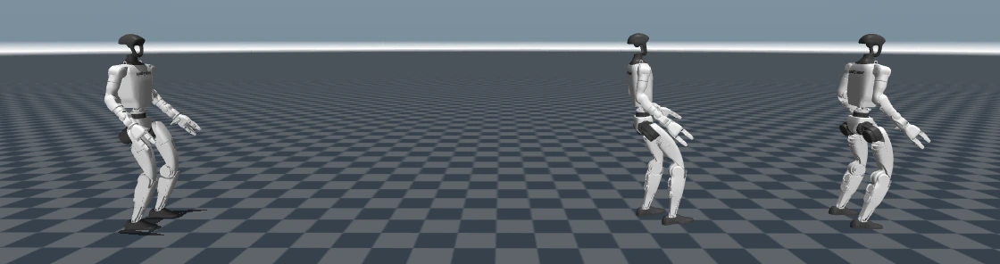
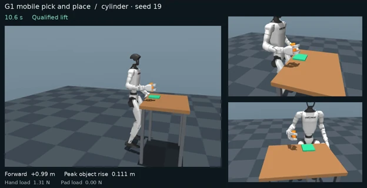
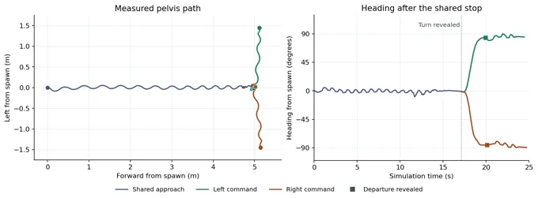

G1 in SONIC token space用 SONIC 运动码控制 G1
What can an agent make a humanoid do with 64 integers every 20 milliseconds? These ALE tasks evaluate the controller a coding agent leaves behind. Explore the simulated motion, inspect how each outcome is scored, and replay the public references.
每 20 毫秒输出 64 个整数，能让人形机器人完成哪些动作？这些 ALE 任务评测编程智能体提交的控制器。你可以查看仿真轨迹、了解评分方式，并重放公开参考策略。
Download the complete offline review and videos下载完整离线报告与录像 ↓

Tabletop pick and place桌前抓取与放置
Find a box or cylinder in three camera views, establish a load-bearing grasp, and release it stably on the pad. Compare a visual planner with direct token prediction.
从三个相机视角定位箱子或圆柱，建立承重抓握，并把物体稳定放在目标垫上。比较视觉规划和直接预测运动码两种控制方法。
Open the manipulation analysis查看抓放分析 ↗
Walk, turn and stop行走、转向与停稳
Walk five meters along a line or pivot right about the starting point. Inspect displacement, signed heading, braking and foot loading at the measured stop.
沿直线行走五米，或围绕起点向右转。观察停稳时的位移、有符号航向、制动效果与脚底受力变化。
Explore the motion traces查看运动轨迹 ↗
Walk to the table and place走到桌前再抓放
Start about one meter from the table. Walk up, dock, lift and release in a single continuous simulation. Follow the contact sequence in a native replay.
从距桌子约一米处出发，在同一段仿真中走到桌前、停稳、抓起物体并松手。通过原生重放查看各阶段的接触事件。
Watch the mobile rollout观看移动抓放回放 ↗
Follow the next command停稳后接收下一条指令
At the same physical stop, the controller can receive a left or right turn. The next walking distance appears only after the pivot. Compare two branches that start with identical motion.
在同一位置停稳后，控制器才会收到左转或右转指令。完成转向并停稳后，它才会获知下一段的行走距离。对比起步动作完全相同、随后分叉的两条轨迹。
Compare the revealed commands比较指令揭示后的两条轨迹 ↗Reading the scores如何读懂评分
Read successful trials out of all starts alongside the normalized ALE reward. The verifier also checks whether actions respond reproducibly to changed observations. Each applied row issues 64 SONIC scalars for 20 ms of control. The fraction of coordinates that changed and the measured acceleration RMS across 29 joints describe different properties of the motion. The coding agent’s input and output tokens come from its separate ALE gateway trace.
同时查看全部开局中的原始成功数和 ALE 归一化奖励。评分器会改变观测，检查控制器能否稳定地随输入调整动作。每执行一行，就会发送 64 个 SONIC 标量码，控制时长为 20 毫秒。码坐标的变化比例与 29 个关节的实测加速度均方根反映运动的不同特性。编程智能体的输入、输出 token 用量另由 ALE 网关记录。
Run a public practice episode在本地运行公开练习
Choose a task to see the commands for a fresh checkout. The first build downloads the public SONIC weights and G1 assets. Each episode runs offline with four CPU cores and 8 GiB on an x86-64 Linux Docker host with AVX2 and FMA.
选择任务即可查看从全新代码仓库运行的命令。首次构建会下载公开的 SONIC 权重和 G1 模型。每次仿真离线运行，需要支持 AVX2 和 FMA 的 x86-64 Linux 主机、Docker、四个 CPU 核和 8 GiB 内存。
Save the launcher next to your checkout. Add --steps 10 for a quick interface check. To try your own controller, supply --submission ./my-controller with its run.sh and omit --policy. Each command prints the raw result for the selected practice seed. The linked pull requests include the separate 16-trial ALE verification commands.
把启动脚本保存在代码仓库旁边。加上 --steps 10 可快速检查接口。测试自己的控制器时，使用 --submission ./my-controller 指向包含 run.sh 的目录，并省去 --policy。命令输出该种子的原始物理结果。各项任务的 PR 中另有 16 次试验的正式 ALE 验证命令。